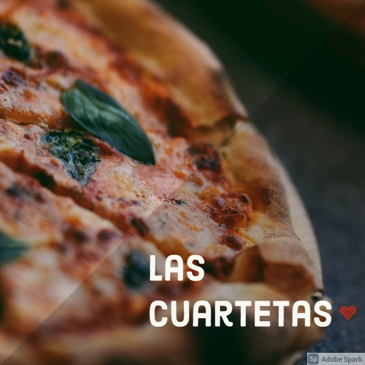

En la Boca, la Av. Almirante Brown ("Bron" según el decir de los vecinos), luce
orgullosamente las mejores pizzerías del barrio, y sinlugar a dudas, Banchero es la más tradicional.
Agustín Banchero llegó a la Boca del Riachuelo en 1893, procedente de su Génova natal. Instaló una pequeña
panadería en la calle Olavarría en la que trabajó con su hijo Juan. Allí nació la fugazza con queso;
rápidamente se convirtió en verdadero patrimonio gastronómico de La Boca, recorrió y triunfó en todo el
mundo.
Hoy El Cedrón es la más famosa pizzería del tradicional barrio
de Mataderos, concurrida por un numeroso público "local" (como
el reconocido historiador Ofelio Vecchio) y otro que llega a comprobar el prestigio que ha trascendido los
límites barriales. Su esquina es conocida como esquina Breccia, debido a la placa allí ubicada en 1994 que
homenajea al dibujante Alberto Breccia.
Hoy El Fortín es una famosa pizzería del barrio de Monte Castro en su límite con Villa Luro,
con una clientela tan consecuente que podría ser comparada con una hinchada. Fundada en 1947 por los señores
Amigo y Fernández, obviamente "hinchas" de Vélez, es uno de los buscados reductos con horno a leña. Mide 3
metros de diámetro, con capacidad para 25 moldes grandes. Se calienta usando quebracho y le dan luz con
madera de álamo y sauce.
En el histórico barrio de Montserrat, en el local de
Moreno 467, entre Bolívar y Defensa, donde funciona desde 1989 la pizzería El Chiste, en una manzana muy rica desde el punto de vista patrimonial si consideramos que en ella conviven: la elegante farmacia La Estrella, el Museo de la Ciudad, la casa en que vivió durante su infancia y juventud la recordada actriz Niní Marshall, la Librería de Avila (ex Librería del Colegio) y el Café Notable La Puerto Rico.

La pizzería del catalán Espinach y del vasco Urcola abrió sus puertas en el local de Corrientes y Libertad, allí suele asegurarse que don
Alberto Vaccarezza escribía cuartetas espontáneas en las paredes,
de ahí que los parroquianos comenzaron a llamarla "La casa de las
cuartetas". A raíz de ello sus dueños la bautizaron oficialmente Las
Cuartetas